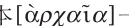

[资本主义关系的原始形成]
在这里我们首先要谈的是：劳动对资本的关系，或者说，劳动对作为资本的劳动客观条件的关系，是以一个历史过程为前提的，这个历史过程曾促使劳动者是所有者，或者说所有者本身从事劳动的各种不同形式发生了解体。
因此，首先指的是：
（1）劳动者把土地当做生产的自然条件的那种关系的解体，即他把这种条件看做是自身的无机存在，看做是自己力量的实验场和自己意志所支配的领域的那种关系的解体。这种所有制所表现出来的一切形式，都是以这样一种共同体为前提的，这种共同体的成员彼此间虽然可能有形式上的差异，但作为共同体的成员，他们都是所有者。所以，这种所有制的原始形式本身就是直接的共同所有制（东方形式，这种形式在斯拉夫人那里有所变形；在古代的和日耳曼的所有制中它发展成为对立物，但仍然是隐蔽的——尽管是对立的——基础）。
（2）劳动者是工具所有者的那种关系的解体。正如上述的土地所有制形式以现实的共同体为前提一样，劳动者对他的工具的这种所有制，是以手工业劳动这一工业劳动发展的特殊形式为前提的；同这种劳动形式相联系的是行会同业公会制度等等。（古代东方的工业在考察上述第一点时就可以加以分析。）在这里，劳动本身一半还是技艺，一半则是目的本身等等。师傅制。资本家自己还是师傅。特殊的劳动技能也保障着劳动工具的占有等等。劳动方式以及劳动组织和劳动工具在某种程度上是继承的。中世纪的城市。劳动还是劳动者自己的劳动；片面能力的一定的自足的发展等等。
（3）在以上两种情况下，劳动者在生产开始以前都具有作为生产者来生活——也就是在生产期间即在完成生产以前维持生活——所必需的消费品。作为土地所有者，他直接拥有必要的消费储备。作为行会师傅，他继承、赚得、积蓄这种消费储备，而作为徒弟，他不过是一个学徒，还完全不是真正的、独立的劳动者，而是按照家长制寄食于师傅。作为（真正的）帮工，他在一定程度上分享师傅所有的消费储备。这种储备即使不是帮工的财产，按照行会的法规和习惯等等，至少是他的共同占有物等等。（这个问题将进一步论述。）
（4）另一方面，还有一种关系也同样发生解体，在这种关系中，劳动者本身、活的劳动能力本身，还直接属于生产的客观条件，而且作为这种生产的客观条件被人占有，因而是奴隶或农奴。对资本来说，工人不是生产条件，而只有劳动才是生产条件。如果资本能够让机器，或者甚至让水、空气去从事劳动，那就更好。而且资本占有的不是工人，而是他的劳动，不是直接地占有，而是通过交换来占有。
一方面，要找到劳动者作为自由工人，作为丧失客体条件的、纯粹主体的劳动能力，来同作为他的非财产，作为他人的财产，作为自为存在的价值，作为资本的生产的客观条件相对立，所需要的历史前提便是这些。另一方面，要问：工人要找到同自己相对立的资本，需要什么样的条件呢？
〔在资本的公式中，活劳动对于原料、对于工具、对于劳动过程中所必需的生活资料的关系，都是从否定的意义上即把这一切都当做非财产来发生关系，——这种资本的公式，首先包括非土地财产，或者说，否定这样一种状态，在这种状态中，劳动的个人把土地看做是自己的东西，也就是说，他是作为土地所有者而劳动、而生产的。在最好的情况下，他不仅是作为劳动者同土地发生关系，而且是作为土地所有者同作为劳动主体的自身发生关系。土地财产潜在地包含着对原料，对原始的工具即土地本身，以及对土地上自然生长出来的果实的所有权。在最原始的形式中，这意味着把土地当做自己的财产，在土地中找到原料、工具以及不是由劳动所创造而是由土地本身所提供的生活资料。只要这种关系再生产出来，那么，派生的工具以及由劳动本身所创造的土地的果实，就显得是包含在原始形式的土地财产中的东西。因此，这种历史状态作为较完全的财产关系，也就在工人同作为资本的劳动条件的关系中首先被否定了。这是第一种历史状态，它在工人同资本的关系中被否定了，或者说作为历史上已经解体的东西而成为前提。
第二，[V—9]只要存在着对工具的所有权，或者说劳动者把工具看做是他自己的东西，只要劳动者作为工具所有者来进行劳动（这同时意味着工具包括在他个人的劳动之内，也就是意味着劳动生产力处在特殊的有限的发展阶段上），只要劳动者表现为所有者或表现为从事劳动的所有者的这种形式，已经成为一种与土地财产并存并且存在于土地财产之外的独立形式——这就是劳动在手工业中和城市中的发展，这种发展已不像在第一种情况下那样，是土地财产的附属品，包括在土地财产之内；因此，原料和生活资料成为手工业者的财产，只是以他的手工业，以他对劳动工具的所有权为中介——，凡是在这样的地方，就已经有了与第一个历史阶段并存并且存在于第一个历史阶段之外的第二个历史阶段；而第一个历史阶段本身，由于上述第二类财产或第二类从事劳动的所有者独立出来，就必然以大大改变了的面貌出现。
因为工具本身已经是劳动的产物，也就是说，构成财产的要素已经是由劳动创造的要素，所以在这里，共同体（指这个第二类财产借以建立的共同体），就不能再像第一种情况下那样以一种自然形成的形式出现了，共同体本身已经是被生产出来的、产生出来的、派生出来的、由劳动者本身生产出来的共同体。显然，凡是在工具的所有权表现为把劳动的生产条件看做财产这样一种关系的地方，工具在实际的劳动中仅仅表现为个人劳动的手段；那种使他实际上占有工具并把工具作为劳动资料来使用的技艺，表现为劳动者的特殊技能，这种特殊技能使他成为工具所有者。总之，行会同业公会制度（即把劳动主体确立为所有者的那种手工业劳动）的基本性质，应该归结为把生产工具（劳动工具）看做是财产这样一种关系，这与把土地（原料本身）看做归自己所有是不同的。这种对生产条件的这一个要素的关系，把劳动的主体确立为所有者，使他成为从事劳动的所有者，这是第二种历史状态，它按其本性只有作为第一种状态的对立物，或者可以说，同时作为已经改变的第一种状态的补充物，才能存在。这第二种历史状态，在资本的第一个公式中也同样被否定了。
第三种可能的形式，就是劳动者只是生活资料的所有者，生活资料表现为劳动主体的自然条件，而无论是土地，还是工具，甚至劳动本身，都不归自己所有。这种形式实质上是奴隶制和农奴制的公式，在工人同作为资本的生产条件的关系中，它也同样被否定了，表现为在历史上已经解体的状态。
所有制的各种原始形式，必然归结为把各种制约着生产的客观因素看做是自己的东西这样一种关系；这些原始形式构成各种形式的共同体的经济基础，同样它们又以一定形式的共同体作为前提。这些形式由于劳动本身被列入生产的客观条件（农奴制和奴隶制）之内而在本质上发生变化，于是属于第一种状态的一切财产形式的单纯肯定性质便丧失了，发生变化了。它们全都包含着奴隶制这种可能性，因而包含着这种对自身的扬弃。至于第二种状态，特殊种类的劳动，其中的师傅制，以及与之相适应的对工具的所有＝对生产条件的所有，这种状态虽然不包含奴隶制和农奴制，但可以在种姓制度的形式中得到类似的否定的发展。〕
〔对生活资料的所有权的第三种形式——如果不是归结为奴隶制和农奴制——不可能包含劳动的个人对生产条件，因而对生存条件的关系。因此，它只能是以土地财产为基础的原始共同体的这样一些成员的关系，他们失去了自己的土地财产，但还没有达到第二种财产形式；面包和娱乐时代85的罗马平民的情形就是这样。〕
〔侍从对他们的领主的关系，或者说个人服务的关系，有本质的不同。因为个人服务实质上仅仅构成土地所有者本身的生存方式，这种土地所有者已经不再从事劳动，而他的财产则把劳动者本身作为农奴等等包括在生产条件之内。在这里，统治关系表现为本质的占有关系。对于动物、土地等等，实质上不可能通过占有而发生任何统治的关系，虽然动物服劳役。占有他人的意志是统治关系的前提。因此，没有意志的东西，例如动物，虽然能服劳役，但这并不使所有者成为领主。可是我们在这里看到，统治关系和隶属关系也属于生产工具占有的这种公式之内；而这些统治关系和隶属关系构成所有原始的财产关系和生产关系发展和灭亡的必要酵母，同时它们又表现出这些关系的局限性。诚然，在资本中，它们被再生产出来（以间接的形式），因而也构成资本解体的酵母，同时也是资本的局限性的标记。〕
[V—10]〔“在贫困时出卖自己和自己近亲，这种权限不幸曾是人们普遍的权利；这在北方各地，在希腊人中，在亚洲都很流行；债主有权把不还债的负债人充当自己的奴仆，而且有权用负债人的劳动或通过出卖其人身（只要这是可能的）来抵偿债务，这种权利也是几乎到处流行的。”（尼布尔[《罗马史》]第1卷第600页）〕
〔尼布尔在一个地方说：贵族和平民之间的关系对于在奥古斯都时代写作的希腊作家是难以了解的，他们错误地理解这种关系，并把这种关系同保护人和被保护民之间的关系混淆起来；这是由于他们
“写作的那个时代，富者与贫者都是唯一真正 的公民阶级；那时贫穷的人，无论出身怎样显贵，也需要有保护人，而百万富翁，即使曾是一个被释放的奴隶，也成了受欢迎的保护人。在他们那里，世袭的从属关系，几乎没有留下一点痕迹”（同上，第1卷第620页）。〕
〔“在两个阶级——麦特克86和被释放的奴隶及其后裔——中，有手工业者，他们的公民权利受到限制，而抛弃了农业的平民则享有这种公民权利。但手工业者也没有丧失拥有自己合法的联合团体的荣誉；他们的行会受到很大的尊敬，以致人们称努玛为这些行会的创立者；行会有九个：笛师、金匠、木匠、染匠、马具匠、制革匠、铜匠、制陶匠以及包括其他一切手工业的第九种行会…… 他们之中有些是独立的城关市民87，是不受任何保护人庇护的享有平等权利的公民（在有这种权利的情况下）；也有的是农奴的后裔，他们的从属关系由于他们的保护人的氏族灭绝而中断了；当然，他们对于旧的公民与公社88间的纠纷，一直是漠不关心的，正如佛罗伦萨的行会对于奎耳夫和吉贝林两派间的争斗漠不关心一样；可能农奴仍然完全处于贵族的支配之下。”（同上，第1卷第623页）〕
一方面，前提是这样一些历史过程，这些历史过程使一个民族等等的大批个人，处于一种即使最初不是真正的自由工人的地位，无论如何也是可能的自由工人的地位，他们唯一的财产是他们的劳动能力，和把劳动能力与现有价值交换的可能性；另一方面，所有生产的客观条件作为他人财产，作为这些个人的非财产，和这些个人相对立，但同时这些客观条件作为价值是可以交换的，因而在一定程度上可以由活劳动占有。这种历史上的解体过程，既是把劳动者束缚于土地和地主而实际又以劳动者对生活资料的所有权为前提的农奴制关系的解体，因而这实质上是劳动者与土地相分离的过程；也是使劳动者成为自耕农89、成为自由劳动的小土地所有者或佃农（隶农90）、成为自由的农民的土地所有制关系的解体〔公共所有制和现实共同体的更古老形式的解体，就不用说了〕；也是以劳动者对劳动工具的所有权为前提的、并且把作为一定手工业技能的劳动本身当做财产（而不仅仅是当做财产的来源）的那种行会关系的解体；同样也是各种不同形式的保护关系的解体，在这些关系中，非所有者作为自己主人的仆从表现为剩余产品的共同消费者，并且以此为代价，穿着自己主人的仆役的制服，参加主人的争斗，从事想象的或实际的个人服务等等。
在所有这些解体的过程中，只要更详尽地考察便可发现：在发生解体的生产关系中占优势的是使用价值，即以直接使用为目的的生产；交换价值及其生产，是以另一种形式占优势为前提的；因此，在所有这些关系中，实物贡赋和劳役比货币支付和货币税占优势。但这只是顺便提一下而已。只要更仔细地考察，同样可以发现，所有这些关系的解体，只有在物质的（因而还有精神的）生产力发展到一定水平时才有可能。
这里首先与我们有关的是：使一个民族等等的大批个人变为可能的自由雇佣工人（只是由于没有财产而被迫劳动，并出卖自己劳动的个人）这一解体的过程，在另一方面所要求的，不是这些个人先前的收入来源和部分财产条件的消失，相反地，只是它们的使用有所不同，它们的存在方式改变了，它们作为自由基金转入他人手里，或者部分地仍然保留在这些个人手里。但同样明显的是，使大批个人脱离他们先前的（以这种或那种形式）对劳动的客观条件的肯定关系，把这些关系加以否定，从而把这些个人变为自由工人，这一过程又可能使这些劳动的客观条件（土地、原料、生活资料、劳动工具、货币或这一切的总和）从它们同这些个人（他们现在已同这些条件分离）先前的联系中游离出来。这些劳动的客观条件现在仍然存在，但却以另一种形式，作为自由基金而存在，在这种形式上一切原有的政治等等的关系都已经消失，这些劳动的客观条件已经只是以价值的形式，以独立的价值的形式，与那些已同这些条件分离的、丧失了财产的个人相对立。
正是这种使大众作为自由工人来同劳动的客观条件相对立的过程，也使这些条件作为[V—11]资本同自由工人相对立。历史的过程使在此以前联系着的因素分离开；因此，这个过程的结果，并不是这些因素中有一个消失了，而是其中的每一个因素都跟另一个因素处在否定关系中：一方面，是自由的工人（可能性上的），另一方面，是资本（可能性上的）。客观条件与这些变为自由工人的阶级的分离，必定同样会在相反的一极表现为这些条件本身的独立化。
如果不把资本和雇佣劳动的关系看做已经成为决定性的、支配整个生产的关系，〔因为在这种情况下，作为雇佣劳动的条件而预先存在的资本，就是雇佣劳动自身的产物，并作为雇佣劳动的条件被雇佣劳动本身当做前提，它作为雇佣劳动本身的前提是由雇佣劳动本身创造出来的。〕而是看做正在历史地形成的关系，也就是说，如果是考察货币向资本的最初转化，考察一方面只是在可能性上存在的资本与另一方面只是在可能性上存在的自由工人之间的交换过程，那么，自然会得出为经济学家们所津津乐道的简单结论：作为资本而出现的一方，必定拥有原料、劳动工具以及使工人在生产期间直到生产完成以前能够维持生活的生活资料。
而且，事情仿佛是这样：在资本家那里，必定已经有了一种积累——出现在劳动之前并且不是来自劳动的积累——，它使资本家能够驱使工人劳动，维持他们的活动能力，把他们作为活的劳动能力维持下去。〔一旦资本和雇佣劳动成为它们自身的前提，即成为先于生产本身而存在的基础，事情首先就会是这样：资本家除了拥有工人用来再生产自身、创造必要的生活资料即实现必要劳动所必需的原料和劳动资料的基金以外，他还拥有使工人实现剩余劳动，即实现资本家的利润所必需的原料和劳动资料的基金。进一步分析会表明，工人不断地为资本家创造出，或者说以资本的形式创造出双重的基金，这种基金的一部分不断地补充工人本身存在的条件，另一部分不断地补充资本存在的条件。我们已经看到，在剩余资本——同资本对劳动的原始关系相比的剩余资本——中，所有现实的、现有的资本，它的每一要素，都同样是对象化的、被资本占有的他人劳动，是不经交换、不付给等价物而被占有的。〕然后，这种不依赖于劳动的、不是由劳动完成的资本的行为，就从资本的形成史中被搬到现代来，变成资本的现实性和它的作用、它的自我形成的一个要素。最后，就由此得出资本对他人劳动的果实有永恒权利的结论，或者不如说，从简单而“公正的”等价物交换规律中引申出资本的赢利方式。
存在于货币形式上的财富，只是由于而且只有劳动的客观条件同劳动本身相分离，才可能用来交换劳动的客观条件。我们已经看到，一部分货币可以单纯通过等价物交换而积累起来；但这是在历史上不值一提的一种微不足道的来源（即假定货币是通过本人的劳动而换得的）。其实，正是由高利贷（特别是对土地财产贷放的高利贷）和由商人的利润所积累起来的动产，即货币财富，才转化为本来意义的资本，即产业资本。这两种形式，就它们不是表现为资本的形式，而是表现为较早的财富形式即资本的前提来说，我们在后面还有机会更详细地谈到。
正如我们已经看到的，资本的概念，资本的形成，包含着这样的意思：资本是以货币，从而以货币形式存在的财富为起点的。这里还包含着这样的意思：资本是从流通中来的，是作为流通的产物出现的。因此，资本的形成不是来自土地财产（在这种场合，至多是来自租地农民，只要他是农产品商人），也不是来自行会（虽然在这种场合有这种可能性），而是来自商人的和高利贷者的财富。可是，只有当自由劳动通过历史过程而与自己存在的客观条件相分离的时候，这种财富才找到购买这种自由劳动的条件。也只有这时候，这种财富才有可能购买这些条件本身。例如，在行会条件下，单纯的货币，如果它本身不是行会的、不是行会师傅的货币，就不可能买到织机，用来织布；一个人可以使用多少织机等等，是预先规定好的。总之，工具本身还同活劳动本身连在一起，还表现为活劳动所支配的领域，以致工具还没有真正进入流通。
要使货币财富有可能转化为资本，一方面，就要能找到自由的工人，另一方面，就要能找到这样的生活资料和材料等等，这些生活资料和材料原先在这种或那种形式下是那些现已丧失自己客观条件的人们的财产，现在同样也变成自由的、可以出卖的了。
而另一种劳动条件——一定的技能、作为劳动资料的工具等等——是货币财富在资本的这个准备时期或最初时期发现的现成的东西，它们部分地表现为城市行会制度的结果，部分地表现为家庭工业即作为农业的附属物的工业的结果。这个历史过程不是资本的结果，而是资本的前提。经过这个历史过程，资本家才在土地财产或一般财产同劳动之间作为中间人（历史地）插了进来。历史根本不知道什么资本家和工人结成联盟[V—12]等等的美妙幻想，在资本概念的发展中也没有这种迹象。在某些地方，在依然完全属于另一个时期的范围内，偶尔会有手工工场发展起来，例如在意大利的各城市中，手工工场曾经同行会并存。但是要成为整个时代普遍的占统治地位的形式，资本的条件就必须不仅局部地，而且是大规模地发展起来。（当行会解体时，或许有个别的行会师傅转化为工业资本家，但这样的情形按事物的本性来说是很少的。整个来说，哪里出现了资本家和工人，哪里的行会制度、师傅和帮工就消失了。）
不言而喻——而且在更详细考察这里所谈到的历史时代时，就可以看到——，以前的生产方式以及劳动者对劳动客观条件的关系的以前方式的解体时期，无疑同时就是这样一个时期，这时一方面货币财富已经发展到一定的广度，另一方面，由于有加速这种解体的同一环境，货币财富迅速地增长和扩大起来。货币财富本身同时就是这种解体的动因之一，而这种解体又是货币财富转化为资本的条件。可是，仅仅有了货币财富，甚至它取得某种统治地位，还不足以使它转化为资本。否则，古代罗马、拜占庭等等的历史就会以自由劳动和资本而告终了，或者确切些说，从此就会开始新的历史了。在那里，旧的所有制关系的解体，也是与货币财富——商业等等——的发展相联系的。但是，这种解体事实上不是导致工业的发展，而是导致乡村对城市的统治。
资本的原始形成，完全不是像人们所想象的那样，似乎是资本积累了生活资料、劳动工具和原料，一句话，积累了同土地相分离的、而且本身早已将人类劳动吸收在内的劳动的客观条件。
〔一看就可以明白，下述说法是很荒谬的循环论证：一方面，工人，即资本必须使之劳动才能使它自己确立为资本的那些工人，首先必须通过资本的积累创造出来，产生出来，等待着资本的呼唤：“变出来”！另一方面，资本本身如无他人劳动，便不能积累，或最多只能积累它自身的劳动，也就是说，它本身只能以非资本和非货币的形式存在，因为在资本存在之前，劳动只能实现在手工业劳动、小农业等等的形式中；简言之，这是完全不可能积累或者只能有很少积累的形式；这种形式只容许有少量剩余产品，而且其中很大一部分要被消费掉。这种积累的概念，我们还必须作更详尽的研究。〕
决不是资本创造出劳动的客观条件。相反，资本的原始形成只不过是这样发生的：作为货币财富而存在的价值，由于旧的生产方式解体的历史过程，一方面能买到劳动的客观条件，另一方面也能用货币从已经自由的工人那里换到活劳动本身。
所有这一切因素都已具备了。它们的分离本身是一个历史过程，解体过程，正是这一个过程使货币能够转化为资本。就货币在历史上也起促进作用来说，只有当货币本身作为最有力的分离手段加入这个过程的时候，而且只有当货币促使被剥夺光的、丧失客观条件的自由工人形成的时候，货币才起这种促进作用。但是，这当然不是由于货币为这些工人创造他们生存的客观条件，而是由于货币加速这些工人同这些条件的分离，——使工人丧失财产。
例如，英国的大土地所有者遣散了那些曾经与他们共同消费剩余农产品的侍从；其次，他们的租佃者赶走了小屋贫农等等，这样一来，首先有大量的活劳动力被抛到劳动市场上，他们在双重意义上是自由的：摆脱旧的保护关系或农奴依附关系以及徭役关系而自由了，其次是丧失一切财物和任何客观的物质存在形式而自由了，自由得一无所有；他们唯一的活路，或是出卖自己的劳动能力，或是行乞、流浪和抢劫。他们最初力图走后一条路，但是被绞架、耻辱柱和鞭子从这一条路上赶到通往劳动市场的狭路上去；由此可见，政府，如亨利七世、亨利八世等等的政府，91是作为历史上解体过程的条件而出现的，并且是作为资本存在条件的创造者而出现的——这已为历史所证明。
另一方面，从前被土地所有者及其侍从所消费的生活资料等等，现在由货币支配，货币要买到它们，以便用它们来购买劳动。货币既未创造、也未积累这些生活资料；它们本来就已存在，在它们以货币为中介而被消费和再生产之前，它们已经被消费和再生产了。发生变化的只不过是：这些生活资料现在被抛到交换市场上了，同那些侍从等等的嘴脱离了直接的联系，并由使用价值变为交换价值，因而落入货币财富的势力范围[V—13]和统治之下。
劳动工具的情况也是一样。货币财富既没有发明、也没有制造纺车和织机。但是，纺工和织工一旦同自己的土地相分离，他们就连同自己的纺车和织机一起落入货币财富等等的统治之下了。资本只不过是把它找到的大量人手和大量工具结合起来。资本把它们聚集在自己的统治之下。这是资本的实在的积累；就是在各个点上把工人连同他们的工具积累起来。关于这个问题，将在考察所谓资本的积累问题时再详细谈。
货币财富——作为商人财富——当然促使旧的生产关系的推进和解体，并使土地所有者有可能例如像亚·斯密92已经出色地指出的那样，拿自己的谷物、牲畜等等去交换来自异乡的使用价值，而不是跟他的侍从一起把他自己所生产的使用价值挥霍掉，也不是把自己的财富在很大程度上表现在同他分享消费的侍从的人数上。在他心目中，货币财富把他的收入的交换价值的意义提高了。在他的那些已成为半资本家（但仍处在非常隐蔽的形式下）的租佃者那里也存在着同样的情况。
交换价值的发展——以商人等级的形式存在的货币促进了这种发展——瓦解着主要是以直接使用价值为目的的生产以及与这种生产相适应的所有制形式——劳动对它的客观条件的关系——，因而导致劳动市场的形成（当然要同奴隶市场区别开）。但是，就是货币的这种作用，也只有在那种不是建立在资本与雇佣劳动之上，而是建立在行会的劳动组织等等之上的城市工商业的前提下，才有可能。城市劳动本身创造了这样一些生产资料，对于这些生产资料来说，行会变成了障碍，就像旧的土地所有制关系对于改良了的农业成为障碍一样，这种改良了的农业本身部分地又是农产品在城市里的销路扩大等等的结果。其他的情况，例如16世纪时使流通的商品量和货币量增多，造成新的需要，因而提高了本地产品的交换价值等等，抬高了价格等等的情况，——所有这一切，一方面促进了旧的生产关系的解体，加速了劳动者或有劳动能力的非劳动者与其再生产的客观条件的分离，这样就促进了货币转化为资本。
可见，如果把资本的这种原始形成理解为似乎是资本积累了并创造了生产的客观条件——生活资料、原料、工具——并且替那些已经被剥夺掉这些条件的劳动者提供了这些条件，那就再荒谬不过了。相反，货币财富部分地助长了那些具有劳动能力的个人劳动力被剥夺掉这些条件；这种分离过程部分地又是在没有货币财富参与的情况下进行的。当资本的原始形成已经达到一定的程度时，货币财富便能够作为中介出现在这样变成自由的客观生活条件与变成自由的但已是一贫如洗的活劳动力二者之间，并且能够借助于一方去购买另一方。至于货币财富本身在转化为资本之前的形成问题，那是属于资产阶级经济的史前时期的问题。高利贷、商业、城市以及与这一切同时兴起的国库，在这方面起了主要作用。租佃者、农民等的积蓄也起过作用，不过作用程度较小。
这里同时又可以看到，交换和交换价值的发展——这种交换价值到处以商业为中介，或者说它的中介可以称为商业；货币在商人等级中保持独立的存在，同样，流通在商业中保持独立的存在——，一方面导致劳动对其生存条件的所有权关系的解体，另一方面又导致劳动本身属于生产客观条件的这些关系的解体；而所有这些关系既表明使用价值和以直接消费为目的的生产占优势，也表明那种本身还直接作为生产前提而存在的现实的共同体占优势。
以交换价值为基础的生产和以这种交换价值的交换为基础的共同体——尽管像我们在论货币的上一章中所看到的那样，它们会造成一种外观，仿佛财产仅仅是劳动的结果，对自己劳动产品的私有是[劳动的]条件——，以及作为财富的一般条件的劳动，都是以劳动与其客观条件相分离为前提的，并且产生出这种分离。这种等价物的交换是存在的，不过，它仅仅是这样一种生产的表层而已，这种生产建立在不通过交换却又在交换的假象下占有他人劳动的基础上。这种交换制度是以资本为基础的，而且，如果把它同资本分开来考察，像它在表面上所表现的那样，把它看做独立的制度，那么，这只是一种假象，不过这是必然的假象。
因此，现在已经毫不奇怪的是，交换价值制度，以劳动为尺度的等价物的交换，会转化为不通过交换而对他人劳动的占有，转化为劳动与财产的完全分离，或者更确切地说，会把这种情况当做这一制度的隐蔽背景而显示出来。因为，交换价值本身和生产交换价值的生产占统治地位的前提是：[V—14]他人的劳动能力本身是交换价值，也就是说，活的劳动能力与其客观条件相分离；对客观条件的关系——或劳动能力对自己的客体性的关系——成了对他人的财产的关系；一句话，对客观条件的关系，成了对资本的关系。只有在封建制度衰亡但还进行着内部斗争的时期，例如14世纪和15世纪上半叶的英国，才是劳动自我解放的黄金时代。为了使劳动重新把劳动的客观条件当做自己的财产，就必须有另一种制度来取代私人交换制度，这种私人交换制度，像我们已经看到的，造成对象化劳动同劳动能力的交换，因而导致不通过交换而占有活劳动。
货币转化为资本的方式，在历史上往往非常明显地表现成这样：例如商人让许多以前以农村副业的形式从事纺织的织工和纺工为他劳动，把他们的副业变成他们的本业。这样，商人就掌握了他们，并把他们变成受他支配的雇佣工人。后来他们又必须离开家乡，联合在一个作坊里——这是第二步。很明显，在这个简单的过程中，商人既没有为织工和纺工预备原料，也没有为他们预备工具、生活资料。商人所做的一切，只是逐渐把他们限制在这样一种劳动之内，这种劳动使他们依赖于出售，依赖于买者，依赖于商人，最终他们就只是为他而生产，并通过他而生产。最初，商人只是通过购买他们的产品来购买他们的劳动；一旦他们只限于生产这种交换价值，从而必须直接生产交换价值，必须把自己的劳动全部用来换取货币，才有可能继续生存，这时他们便落入商人的支配之下，最后就连他们好像是把产品出卖给商人的那种假象也消失了。商人购买他们的劳动，并且先是剥夺他们对产品的所有权，很快又剥夺对劳动工具的所有权，或者是为了减低商人自己的生产费用而把劳动工具留给他们作为徒有其名的财产。
在原始的历史形式中，资本起初零散地或在个别地方出现，与旧的生产方式并存，但逐渐地到处破坏旧的生产方式。属于这种原始的历史形式的，一方面，是本来意义上的手工工场（还不是工厂）。手工工场产生在为出口、为国外市场而大批生产的地方，也就是说以大宗海陆贸易为基础，产生在贸易中心地，例如，意大利的城市、君士坦丁堡、弗兰德和荷兰的城市、西班牙的某些城市如巴塞罗纳等等。工场手工业最初并没有侵入所谓城市工商业，而是侵入农村副业，如纺和织，即最少需要行会技巧、技艺训练的那种劳动。除那些大的贸易中心地以外——在这些地方，工场手工业的基础是国外市场，因而可以说生产自然而然以交换价值为目标，也就是说，是直接与航海有关的手工工场、造船业本身等等——，除这些大的贸易中心地以外，工场手工业起先不是建立在城市中，而是建立在乡村中，建立在没有行会等等的农村中。农村副业包含着工场手工业的广阔基础，而城市工商业为了能够按照工厂方式经营，则要求生产的高度发展。包含着这种基础的，还有这样一些生产部门，如玻璃厂、金属加工厂、锯木厂等等，它们一开始就都要求劳动力更加集中、更多地利用自然力、大量生产以及劳动资料等等的集中。造纸厂等等也是一样。
另一方面，又有租地农场主的出现和农业人口向自由短工的转化。虽然这种转化在农村中彻底完成并达到它的最纯粹形式为期最晚，但它在那里开始的时间是最早的。
古代人从来不曾超出道地的城市手工艺的范围，因此从未能达到大工业。大工业的首要前提，是把农村整个地纳入不是使用价值而是交换价值的生产。玻璃厂、造纸厂、炼铁厂等等，是不能以行会的方式经营的。它们要求大规模的生产、广泛市场的销路、操在企业家手中的货币财富——这并不是说，企业家创造了条件，他既不创造主观条件，也不创造客观条件，但在旧的所有制关系和生产关系之下，要把这些条件结合起来是不可能的。
然后，农奴制依附关系的解体，以及工场手工业的产生，逐渐地使一切劳动部门转变为资本经营的部门。当然，城市本身也在非行会的短工和粗工等等形式上包含着形成本来意义的雇佣劳动的一个要素。
[V—15]如果说我们看到，货币转化为资本，是以劳动的客观条件与劳动者相分离、相独立的那个历史过程为前提的，那么，从另一方面说，资本一旦产生出来并发展下去，其结果就是使全部生产服从自己，并到处发展和实现劳动与财产之间，劳动与劳动的客观条件之间的分离。在以后的叙述中可以看到，资本是怎样消灭手工业劳动、从事劳动的小土地所有制等等，甚至也消灭了那种处在不与劳动相对立的形式上的资本本身，即小资本和介于旧生产方式（或在资本的基础上更新的旧生产方式）同典型的名副其实的资本生产方式之间的中间类型、混合类型。
在资本产生时作为前提的唯一积累，是货币财富的积累，这种货币财富从本身来看完全是非生产的，它仅仅从流通中产生出来而且仅仅属于流通。资本迅速为自己创造国内市场，是通过消灭所有的农村副业，从而为一切人纺织，为一切人供应衣服等等，一句话，使以前作为直接使用价值而生产的商品具有交换价值的形式，这是一个由于劳动者与土地以及与生产条件的所有权（甚至也许是依附者的所有权）相分离而自然产生的过程。
城市手工业在实质上虽然是以交换和创造交换价值为基础的，但在这里生产的直接的主要的目的，是保证手工业者、手工业师傅的生存，因而是使用价值，不是发财致富，不是作为交换价值的交换价值。所以，生产处处从属于作为前提的消费，供给从属于需求，而且只是缓慢地扩大着。
可见，资本家和雇佣工人的产生，是资本价值增殖过程的主要产物。普通经济学只看到生产出来的物品，而把这一点完全忽略了。因为在这个过程中，对象化的劳动同时又表现为工人的非对象性，表现为与工人对立的一个主体的对象性，表现为工人之外的异己意志的财产，所以资本就必然地同时是资本家，而有些社会主义者认为，我们需要资本，但不需要资本家，93——这是完全错误的。在资本的概念中包含着这样一点：劳动的客观条件（而这种客观条件是劳动本身的产物）对劳动来说人格化了，或者同样可以说，客观条件表现为对工人来说是异己的人格的财产。资本的概念中包含着资本家。
但是，这种错误丝毫不比谈论古代的资本，谈论罗马、希腊的资本家的那些语言学家所犯的错误大。这只不过是以另一种说法表明在罗马和希腊劳动曾是自由的，不过这一点是这些先生们未必想说出的。我们现在不但称美国的种植园主为资本家，而且他们也确实是这样的人，这是由于，他们是作为以自由劳动为基础的世界市场范围内的畸形物而存在的。
如果谈到在古代人那里还没有出现的“资本”这个词（虽然在希腊人那里，不加息的原始资本一词相当于拉丁语的借贷的本金[principalis summa rei creditae]。94）那么至今还带着自己的牲畜群在亚洲高原的草原上放牧的游牧民，就是最大的资本家了，因为资本最初的含义是牲畜，所以至今在法国南部，往往由于缺乏资本而订立的分成租佃制契约恰恰例外地被称为：牲畜租赁契约[Bail de bestes à Cheptel]。假如用说得很蹩脚的拉丁语来表达，那么，我们的资本家或首脑人物[Capitales Homines]便成了应交纳人头税的人[qui debent censum de capite]95。
当规定资本的概念时，会遇到在规定货币概念时所没有遇到的困难。资本实质上就是资本家；但是，它同时又是作为一种与资本家不同的资本家存在要素，或者说生产本身就是资本。我们还将看到，人们给资本一词加进了许多就资本概念来说看来并不包含的含义。例如人们说，把资本借出去，把资本积累起来等等。在所有这些说法中，资本不过是物，同构成它的物质完全是一回事。但这个问题以及其他问题，将在论述过程中得到解释。
（顺便当做笑话说一下：勇敢的亚当·弥勒以极其神秘的眼光看待一切比喻，他也听说日常生活中的活资本是与死资本相对立的，并用神智学来加以解释。96在这方面，阿瑟尔斯坦王的说法倒可以开导他：我把我的财产的十分之一，既包括活的牲畜，也包括死的土地果实，献给神。）97
货币始终具有同一形式，同一基质；因此很容易认为货币只是一种物。但是，同样的东西，商品、货币等等，或者可以代表资本，或者可以代表收入等等。甚至经济学家们也明白：货币是不可捉摸的东西；同样的物，有时可以包括在资本的规定中，有时可以包括在另外的、对立的规定中，因此，它或者是资本，或者不是资本。可见，资本显然是关系，而且只能是生产关系。
85 “面包和娱乐”（panes et circenses），出自尤维纳利斯《讽刺诗集》第10节第81行。马克思说的面包和娱乐时代，指的是罗马奴隶制国家的繁荣时期，那时丧失社会地位的平民被排除于生产领域之外，主要靠国家和富有的奴隶主的施舍来生活。发放钱粮和大搞竞技比赛，是公元前1世纪以来罗马官吏为防止平民闹事而采取的一种重要手段。——153。
86 麦特克即在古希腊城邦定居的外来移民。他们虽有人身自由，但没有雅典的公民权利。他们不能参加人民大会，不能担任公职和占有不动产，不许和雅典公民通婚等，他们可以从事手工业、商业等职业并参加祭祀庆祝活动，他们必须交纳特别的捐税和服兵役，必须有全权的公民作为自己的保护人，在法庭上也只能由全权公民代为辩护。公元前5—前4世纪，麦特克成为阿提卡城市人口中的重要部分，在阿提卡的经济生活，尤其是贸易方面起了重要作用。——154。
87 城关市民是指中世纪居住在原城区界桩以外的居民，城市往往为提高防御能力而给他们以公民权。——154。
88 奎耳夫和吉贝林两派是中世纪德意志皇帝和罗马教皇斗争中的两个派别，奎耳夫派拥护教皇，吉贝林派拥护施陶芬皇帝，意大利北部各城中这两派之间的激烈斗争，在霍亨施陶芬王朝之后仍在进行，并完全失去了它原来的意义。——154。
89 自耕农是拥有人身自由、但在地主土地上垦殖的农民。英国的自耕农是英国独立的（自由的）农民，由于资本原始积累的过程，特别是由于所谓圈用公有地，土地被大地主强行没收，这些农民大约于1750年消失。自耕农被小农场主——租佃者所取代。自耕农曾是熟练的弓箭手，直到枪炮广泛传播之前，他们通常是英国军队的基本力量；他们以自己在战斗中坚定勇敢而著称。马克思曾经写道，在17世纪英国资产阶级革命时期，他们是资产阶级和资产阶级化贵族的领袖奥·克伦威尔的主力。在英国的文艺作品和科学文献中都反映了自耕农个人的勇敢精神、他们的作战艺术以及他们作为“英国民族”独立的真正支柱和捍卫者的作用。
“骄傲的英国自耕农”（“proud yeomenry of England”）看来是莎士比亚“好农民”，“战吧，英国人！勇敢战吧，农民们！”（“good yeomen”，“fight gentlmen of England，fight boldly yeomen”）的同义语（见莎士比亚《亨利五世》第3幕第1场；莎士比亚《理查三世》第5幕第3场）。——154、378、515。 [90] 隶农是古罗马大庄园中半自由的小租地农民或世袭的佃农。——154。
91 关于亨利七世、亨利八世及其他英国国王和女王的立法的作用，见《资本论》第1卷第24章第3节（《马克思恩格斯文集》第5卷第843—851页）。——160。
92 亚·斯密关于土地所有者不再把产品作为使用价值挥霍掉的叙述，见他的《国民财富的性质和原因的研究》第3篇第4章。——161。
93 马克思在1861—1863年经济学手稿的《剩余价值理论》中，在论述英国社会主义者托·霍吉斯金的那一节中，概括地评述了英国社会主义者的这一观点（见《政治经济学批判（1861—1863年手稿）》第XV笔记本第875—879页）。在未写完的关于英国社会主义者约·布雷的那一节中，马克思从布雷的著作《劳动的不公正现象及其解决办法》1839年利兹版第59页上引用了他的这样一段话：“对生产者的操作具有重大意义的不是资本家，而是资本。资本和资本家之间的区别就像船上装的货物和提货单之间的区别一样大。”（同上，第X笔记本第442页）——166。
94 借贷的本金（principalis summa rei creditae）在希腊曾被称为不加息的原始资本（α`ρχαι˜α）。沙·迪·迪康热在他的《中世纪和近代拉丁语词典》中曾对资本这个词的语源进行研究，见该书1842年巴黎版第2卷第139—141页。——167。
95 首脑人物（Capitales homines）便成了应交纳人头税的人（qui debent censum de capite），这句话马克思引自沙·迪·迪康热的《中世纪和近代拉丁语词典》第2卷第141页。迪康热在那里进一步解释说：这些人当时并不是完全地而是有条件地获得自由，他们承担劳役、提供服务或负有交纳年税的义务。——167。
96 见亚·亨·弥勒《治国艺术原理》1809年柏林版第1册第226—241页。——168。
97 “我把我的财产的十分之一，既包括活的牲畜，也包括死的土地果实，献给神”，这句话马克思引自沙·迪·迪康热的《中世纪和近代拉丁语词典》第2卷第140页，迪康热在那里举出盎格鲁撒克逊国王阿瑟尔斯坦的一段法律条文作为例证，说明“活的财产”这个词是在“活的牲畜”这一含义上使用的。——168。